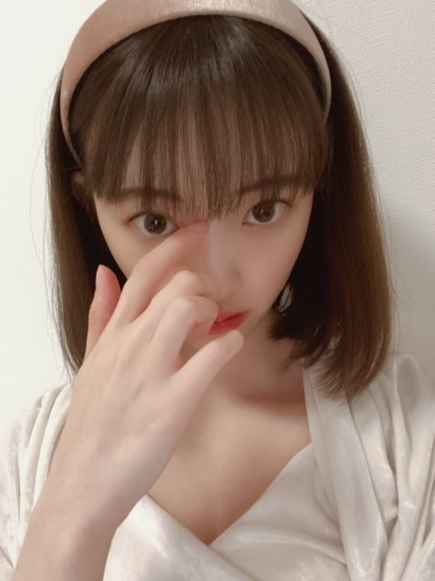

2020/0405Sunおうちじかん
こんばんわに
お家での過ごし方
みなさんはどんな感じでしょうか？
私は本を読んだり
家族で美味しいご飯を食べたり
睡眠と食事はもちろん大切にしつつ
気になってた映画を観たり
switchでバイオハザード5と6をはじめたりして
お家時間を過ごしています☺︎
早くいつも通りの日々がきますように

今宵は
あつ森してから
マリーアントワネットを観て寝るのだ
あ、乃木坂工事中も観てね
おやすみ〜
2020/04/05 20:54
コメント(398)
乃木坂工事中見ました。
未央奈ちゃんの髪型ストレートで髪の毛カットする前のロング姿貴重ですね。
新４期生の紹介でしたね
未央奈ちゃんの｢ライス下さい｣かわいい～
未央奈ちゃんの髪型ストレートで髪の毛カットする前のロング姿貴重ですね。
新４期生の紹介でしたね
未央奈ちゃんの｢ライス下さい｣かわいい～
ブログ更新連日ありがとう！！
悲しい日が続いてるけど、ブログ・モバメでギアがあがります！！まだまだ負けずにがんばれそう！！
悲しい日が続いてるけど、ブログ・モバメでギアがあがります！！まだまだ負けずにがんばれそう！！
どうぶつの森私もやってるよ！でも妹に買ったこと内緒にしてるから夜中にこっそりやってる笑笑 インスタもありがとうね！！カチューシャとパジャマ可愛いのお！乃木中のライスください！も最高に可愛かった笑笑 ロングもショートもすき！！
すきな映画はトランスポーターかなぁ。最近よく見る！1から3までが特にすきで、ジェイソンスティサムさんの演技、素早いアクションがすごくすき！！あと思い出のマーニーとかも見てる！映画の話握手会でしたいなぁ。早く会いたいー！！
ももんが
すきな映画はトランスポーターかなぁ。最近よく見る！1から3までが特にすきで、ジェイソンスティサムさんの演技、素早いアクションがすごくすき！！あと思い出のマーニーとかも見てる！映画の話握手会でしたいなぁ。早く会いたいー！！
ももんが
休むときは休まないといけませんよ。未央奈さん。
こんばんはお疲れさま☺
おうち時間有意義に使ってるね✨
堀ちゃんきっと時間使うん上手なんやね。
写真相変わらずのべっぴんさんやん✨
ちょいと色っぽいかな？☺
と勝手に思ったよ☺
今日夕方総理から会見ありましたね。
明日には正式に詳細と、そして宣言が発令されるね。
兵庫県も含まれています。
特にこの一ヶ月が正念場なんかな？
みんな一人一人がしっかりと意識を持ち、一人一人が自分自身を守らないとね。
堀ちゃんも体調気をつけてくださいね。
勿論家族の皆さんも。
勿論チーム乃木坂もやね✨
色んな意味で頑張ろう～✨
ではではまたね☺
ほなね、堀ちゃん☺
おうち時間有意義に使ってるね✨
堀ちゃんきっと時間使うん上手なんやね。
写真相変わらずのべっぴんさんやん✨
ちょいと色っぽいかな？☺
と勝手に思ったよ☺
今日夕方総理から会見ありましたね。
明日には正式に詳細と、そして宣言が発令されるね。
兵庫県も含まれています。
特にこの一ヶ月が正念場なんかな？
みんな一人一人がしっかりと意識を持ち、一人一人が自分自身を守らないとね。
堀ちゃんも体調気をつけてくださいね。
勿論家族の皆さんも。
勿論チーム乃木坂もやね✨
色んな意味で頑張ろう～✨
ではではまたね☺
ほなね、堀ちゃん☺
お疲れ様です、堀さん！
そうですね、個人的に思うのですけど、堀さんがブログに載せてくれる写真がとてもかわいくて、魅力的でして、そうですね、なんといいますか、そうゆう写真だけを集めてもね、写真集とかフォトブックとか出せるのではないかと、といいますか、出してほしいなと思うぐらいですね
そうですね、僕もバイオハザード好きですね
RE:3、発売されましたね。
そうですね、まだプレイしてないのですけどね、なんといいますか、なんとなく想像できる気がしますね。
そうですね、やっぱりね、難しそうな気がしますね
バイオハザード、個人的には5が好きですね。
6はね、なんといいますか、無限なんとかがあって尚難しいなと思いますね
そうですね、乃木坂工事中観ました！
そうですね、個人的な話なのですけど、今はそんなに抵抗なく店員さんにどんどん話かけたりするのですけど、林さんの歳の頃ぐらいは店員さんになかなか話しかけられなくて、そうですね、そのため必要なものが買えなかったという経験もありますからね、林さんの気持ちわかりますね
そうですね、そして僕の場合ですけどね、店員さんに話かけることにはそんなに抵抗はないですけど、なかなかね、ライスくださいとはシャウトできそうにない気がしますね（笑）
手振ってね、来てもらいますね
そうですね、シャウトは、少なくとも僕にはハードルが高いですね（笑）
昨日の乃木坂工事中、楽しかったです！
そうですね、できるだけ短く伝えようと思うのですけどね、堀さんだとコメントしたい話題多くてね、長くなりがちですね
それでは、健康にはお気をつけてお過ごしください！
そうですね、個人的に思うのですけど、堀さんがブログに載せてくれる写真がとてもかわいくて、魅力的でして、そうですね、なんといいますか、そうゆう写真だけを集めてもね、写真集とかフォトブックとか出せるのではないかと、といいますか、出してほしいなと思うぐらいですね
そうですね、僕もバイオハザード好きですね
RE:3、発売されましたね。
そうですね、まだプレイしてないのですけどね、なんといいますか、なんとなく想像できる気がしますね。
そうですね、やっぱりね、難しそうな気がしますね
バイオハザード、個人的には5が好きですね。
6はね、なんといいますか、無限なんとかがあって尚難しいなと思いますね
そうですね、乃木坂工事中観ました！
そうですね、個人的な話なのですけど、今はそんなに抵抗なく店員さんにどんどん話かけたりするのですけど、林さんの歳の頃ぐらいは店員さんになかなか話しかけられなくて、そうですね、そのため必要なものが買えなかったという経験もありますからね、林さんの気持ちわかりますね
そうですね、そして僕の場合ですけどね、店員さんに話かけることにはそんなに抵抗はないですけど、なかなかね、ライスくださいとはシャウトできそうにない気がしますね
手振ってね、来てもらいますね
そうですね、シャウトは、少なくとも僕にはハードルが高いですね
昨日の乃木坂工事中、楽しかったです！
そうですね、できるだけ短く伝えようと思うのですけどね、堀さんだとコメントしたい話題多くてね、長くなりがちですね
それでは、健康にはお気をつけてお過ごしください！
みおな〜♪
こんばんはっ！
ボブ似合ってるね♪
よく、ウイルスって何？
バイ菌みたいなもの？
って訊かれることがあるので
今回は少しウイルスについてのお話
興味なければ読み飛ばしてね
まず、今回の感染症の原因は
細菌や真菌、寄生虫などの
生物による感染ではなく
ウイルスという物質？によるものです
ウイルスとはたんぱく質の殻の中に
RNA(DNAのこともある)という
遺伝物質含んだ細菌よりも
うんと小さい生命体？のことです
？としたのは、ウイルスは
数十億年にわたり生物と共に進化
してきた｢生命体｣でありながら、
細胞外ではまったく活動しない
｢物質｣でもあるからです
ウイルスの増殖能力は凄まじく
たった1個のウイルスが細胞に
感染すると、5、6時間で
1万個を超す子ウイルスが生まれます
ただその多くは弱く、外界では
すぐに感染力を失って“死”にます
ただし条件さえ整えば
数万年もの凍結状態に置かれても
体がバラバラになったとしても
“復活”します
ウイルスの生と死は、
生物のそれとはどこかズレています
一部のウイルスは、たびたび
世界的流行を引き起こしてきました
ただしそれは、人類がウイルスを
本来の宿主から引き離し
都市という居場所を与えた結果です
本来の宿主と共にあるとき、
宿主の成長を助けたり、
新たな能力を与えたりして
ウイルスは｢守護者｣にもなりえます
人類もウイルスと共に進化してきました
人間のDNAの半分もの部分が
ウイルス由来の遺伝情報なのです
ウイルスの生体を知れば知るほど
生と死の、生物と無生物の、共生と敵対
の境界線が曖昧になってきますね
以上、ずっきゅん依存症の
ウイルス講座でしたヽ(*´∀｀*)ノ
こんばんはっ！
ボブ似合ってるね♪
よく、ウイルスって何？
バイ菌みたいなもの？
って訊かれることがあるので
今回は少しウイルスについてのお話
興味なければ読み飛ばしてね
まず、今回の感染症の原因は
細菌や真菌、寄生虫などの
生物による感染ではなく
ウイルスという物質？によるものです
ウイルスとはたんぱく質の殻の中に
RNA(DNAのこともある)という
遺伝物質含んだ細菌よりも
うんと小さい生命体？のことです
？としたのは、ウイルスは
数十億年にわたり生物と共に進化
してきた｢生命体｣でありながら、
細胞外ではまったく活動しない
｢物質｣でもあるからです
ウイルスの増殖能力は凄まじく
たった1個のウイルスが細胞に
感染すると、5、6時間で
1万個を超す子ウイルスが生まれます
ただその多くは弱く、外界では
すぐに感染力を失って“死”にます
ただし条件さえ整えば
数万年もの凍結状態に置かれても
体がバラバラになったとしても
“復活”します
ウイルスの生と死は、
生物のそれとはどこかズレています
一部のウイルスは、たびたび
世界的流行を引き起こしてきました
ただしそれは、人類がウイルスを
本来の宿主から引き離し
都市という居場所を与えた結果です
本来の宿主と共にあるとき、
宿主の成長を助けたり、
新たな能力を与えたりして
ウイルスは｢守護者｣にもなりえます
人類もウイルスと共に進化してきました
人間のDNAの半分もの部分が
ウイルス由来の遺伝情報なのです
ウイルスの生体を知れば知るほど
生と死の、生物と無生物の、共生と敵対
の境界線が曖昧になってきますね
以上、ずっきゅん依存症の
ウイルス講座でしたヽ(*´∀｀*)ノ
しあわせの保護色のCD買ったよ～～～～～
未央奈～♪
昨日の乃木中観たよ！
新４期生に指名されてたね。
私も未央奈大好きだけど、好かれてて何か誇らしくなった！
未央奈推しとしてね♪
本当に毎日コメントしてるな～
しつこかったらごめんね(TT)
仕事行って、未央奈にコメントするのを日課にしてる。
休みの日は家にてコメントしてる。
それを楽しみにしてるよ～！
本当に未央奈がいてくれてよかった！
ありがとう～(*^^*)
ところで、東京は益々感染者増えていて大変だから気をつけてね！
私も気をつけます！！
また会えるときを祈って…。
昨日の乃木中観たよ！
新４期生に指名されてたね。
私も未央奈大好きだけど、好かれてて何か誇らしくなった！
未央奈推しとしてね♪
本当に毎日コメントしてるな～
しつこかったらごめんね(TT)
仕事行って、未央奈にコメントするのを日課にしてる。
休みの日は家にてコメントしてる。
それを楽しみにしてるよ～！
本当に未央奈がいてくれてよかった！
ありがとう～(*^^*)
ところで、東京は益々感染者増えていて大変だから気をつけてね！
私も気をつけます！！
また会えるときを祈って…。
いいですね、
Switchどこにもなくて、困ってます！
自粛生活楽しんで！
Switchどこにもなくて、困ってます！
自粛生活楽しんで！
ハイ❗️ すきです。
おうち生活してるんだね？
する事あって羨ましいな～逆に休みの日なんか
暇だもんな笑。
野球が無いし余計、暇
する事あって羨ましいな～逆に休みの日なんか
暇だもんな笑。
野球が無いし余計、暇
ライスください！
堀ちゃんが乃木坂にとって不可欠な存在に思った瞬間…。いままで一番かもしれない。
そしてきっと乃木坂46流行語大賞にノミネートされるのだろう。
また続きが観たい『堀熱大陸』の。
堀ちゃんが乃木坂にとって不可欠な存在に思った瞬間…。いままで一番かもしれない。
そしてきっと乃木坂46流行語大賞にノミネートされるのだろう。
また続きが観たい『堀熱大陸』の。
スマホに十字ボタン？
と思いきや、Switch Liteですね。
あつ森は、人気ですねー。
三坂道ともメンバー内で、流行ってるみたいですね☆
と思いきや、Switch Liteですね。
あつ森は、人気ですねー。
三坂道ともメンバー内で、流行ってるみたいですね☆
堀ちゃん、いつも優しさをありがとう〜
堀ちゃん、大好きだよー
堀ちゃん、大好きだよー
オススメのパーカーのブランド教えてください！！
未央奈元気そうでよかった！
それで俺は十分だ。
家ではあつ森したり映画鑑賞してるよー
未央奈と同じ感じかな〜
病院勤務だから仕事休めないし、感染しないように努力するしかないよね…
では、おやすみ
それで俺は十分だ。
家ではあつ森したり映画鑑賞してるよー
未央奈と同じ感じかな〜
病院勤務だから仕事休めないし、感染しないように努力するしかないよね…
では、おやすみ
お疲れ様です!
俺はまだ今年に入ってから電車に一切乗って居ないんですよね!
簡単に言えば4ヶ月近く公共交通機関を利用して居ないんですよね!
1日でも速く事態が終息して日本中が笑顔になるのを期待したいです!
俺は何よりも握手会で未央奈ちゃんに会いたいです!
未央奈
かわいい
かわいい
ソフィアコッポラ監督の作品は、僕も何本か観てます。いわゆる社会通念とは異なる視点から事象を捉えるという点で、影響を受けたかな。
未央奈さん。ブログ更新ありがとう。どこにでもいるおっさんです。
こんな時期だからこそ、ブログを更新しつづけてくれてるんだね。その、やさしさに感謝。
やさしさとは、強さ。
未央奈さんを見ていてそう感じました。
いつか、会いにいきます。
ひでき
こんな時期だからこそ、ブログを更新しつづけてくれてるんだね。その、やさしさに感謝。
やさしさとは、強さ。
未央奈さんを見ていてそう感じました。
いつか、会いにいきます。
ひでき
ライスください！
未央奈ちゃん更新ありがとう！
採用してほしいです！！
◇日向坂46の推しメンと好きな曲を教えてください！
これからも頑張ってくださいー！
rimi
採用してほしいです！！
◇日向坂46の推しメンと好きな曲を教えてください！
これからも頑張ってくださいー！
rimi
ブログ更新ありがとう
みおな可愛すぎるよ〜
オススメのリップクリーム、ファンデーション、口紅があったら教えてください
みおな可愛すぎるよ〜
オススメのリップクリーム、ファンデーション、口紅があったら教えてください
林瑠奈ちゃんのまあまあな無茶振りに
最高の対応をする未央奈さん、素敵です
ライスください！
最高の対応をする未央奈さん、素敵です
ライスください！
みおなちゃん更新ありがとう╰(*´︶`*)╯♡
写真もありがと〜(*´꒳`*)
お家ではモンストしてるかネットサーフィンしてるとかかなぁ(о´∀`о)
乃木中見たよー
ライス下さい！最高でした笑
写真もありがと〜(*´꒳`*)
お家ではモンストしてるかネットサーフィンしてるとかかなぁ(о´∀`о)
乃木中見たよー
ライス下さい！最高でした笑
ブログ更新ありがとうございます
コロナには気をつけて下さいね！
Switchでバイオハザード良いですね〜❗️自分もやってみます！
それとMステ見ました！まいやんの最後のMステとても感動しつつ未央奈の髪がボブになっていてとても可愛かったです‼️
これからも頑張って下さい❗️応援してます
コロナには気をつけて下さいね！
Switchでバイオハザード良いですね〜❗️自分もやってみます！
それとMステ見ました！まいやんの最後のMステとても感動しつつ未央奈の髪がボブになっていてとても可愛かったです‼️
これからも頑張って下さい❗️応援してます
こんにちわ！
ブログ更新ありがとうございます。
どうぶつの森いいですね！
僕も買いました。
堀ちゃんは島の名前なににしましたか？
よかったら僕の島の名前決めて下さい笑
ブログ更新ありがとうございます。
どうぶつの森いいですね！
僕も買いました。
堀ちゃんは島の名前なににしましたか？
よかったら僕の島の名前決めて下さい笑
未央奈大好き
未央奈ちゃん、おはよう。
昨日もインスタやTwitterで可愛い人の
いろんな姿を見て幸せな日。
カコミオナも毎回楽しみにしている。
比較するつもりはなかったけど
綺麗な大人の女性になってるなと
実感します。
プティくんの動画は永遠に観られる
癒しの動画だね。
おやつをあげるオモチャなのかな。
あんなに良いものがあるとは…
僕も以前、犬を飼っていたけど
オモチャといえば噛む系のものばかり。
おかげで部屋中噛み跡だらけ。
けど、怒る気にはなれない癒しの存在。
懐かしいなぁ。また飼いたくなる。
そういえば、かくれんぼというゲームに
勝った気でいたけど実は負けてるのでは
と思ってしまった。
正解が分からない。
気付かぬふりをするべきか
ツッコミの精度をあげるべきか。
困惑しつつも悪い気はしない。
では。
昨日もインスタやTwitterで可愛い人の
いろんな姿を見て幸せな日。
カコミオナも毎回楽しみにしている。
比較するつもりはなかったけど
綺麗な大人の女性になってるなと
実感します。
プティくんの動画は永遠に観られる
癒しの動画だね。
おやつをあげるオモチャなのかな。
あんなに良いものがあるとは…
僕も以前、犬を飼っていたけど
オモチャといえば噛む系のものばかり。
おかげで部屋中噛み跡だらけ。
けど、怒る気にはなれない癒しの存在。
懐かしいなぁ。また飼いたくなる。
そういえば、かくれんぼというゲームに
勝った気でいたけど実は負けてるのでは
と思ってしまった。
正解が分からない。
気付かぬふりをするべきか
ツッコミの精度をあげるべきか。
困惑しつつも悪い気はしない。
では。
おはようございます☺
昨日も書いたけど体調管理ホンマに気をつけてくださいね✨
今はこんな時やから特に大事にしてください。
写真集楽しみにしてます。
ではではまたね☺
ほなね、堀ちゃん☺
昨日も書いたけど体調管理ホンマに気をつけてくださいね✨
今はこんな時やから特に大事にしてください。
写真集楽しみにしてます。
ではではまたね☺
ほなね、堀ちゃん☺
未央奈ちゃん、こんにちわんこそば！
俺はバイオハザード5と6だけでなく、1～4、
コードベロニカ、ディベレーション1と2をやった
ことがあるよ！ ディベレーション2以外全て最終章
までクリアしたかな
実写版映画バイオハザードは1～6全て観たよ
このヘアースタイルのカシューシャ姿の未央奈ちゃん
もとても可愛い

乃木坂工事中は予約録画したから今日中に
見る
俺はバイオハザード5と6だけでなく、1～4、
コードベロニカ、ディベレーション1と2をやった
ことがあるよ！ ディベレーション2以外全て最終章
までクリアしたかな
実写版映画バイオハザードは1～6全て観たよ
このヘアースタイルのカシューシャ姿の未央奈ちゃん
もとても可愛い
乃木坂工事中は予約録画したから今日中に
見る
あつ森流行ってるね(*^^*)
こんにちはお疲れさま☺
コメント書いたけど載らないや(笑)
なんか分からないけど(笑)ハハハ
とにかく体調ホンマに気をつけてくださいね。
チーム乃木坂みんなもやね☺
勿論俺もやし✨
みんな大事にして。
ではではまたね☺
ほなね、堀ちゃん☺
コメント書いたけど載らないや(笑)
なんか分からないけど(笑)ハハハ
とにかく体調ホンマに気をつけてくださいね。
チーム乃木坂みんなもやね☺
勿論俺もやし✨
みんな大事にして。
ではではまたね☺
ほなね、堀ちゃん☺
ボブの堀ちゃん、やっぱり可愛いです！
すっごく似合っています！
自分は休みの日、家にいるときは寝てるか、音楽を聞いてるか、ただただボーっとしてることが多いです。
なんか他に楽しいこと、やることがあればいいのですが…。
おすすめの本とかありますか？
すっごく似合っています！
自分は休みの日、家にいるときは寝てるか、音楽を聞いてるか、ただただボーっとしてることが多いです。
なんか他に楽しいこと、やることがあればいいのですが…。
おすすめの本とかありますか？
ボブ、良いと思います。
林瑠奈ちゃんのまあまあな無茶振りに
最高の対応をする未央奈さん、素敵です
ライスください！
最高の対応をする未央奈さん、素敵です
ライスください！
いつもブログ更新ありがとう！
部屋着の未央奈ちゃん、めちゃくちゃ可愛い！
家に仕事から帰ってきて、こんな可愛い子がいたら
疲れが吹っ飛んじゃいますね笑
未央奈ちゃんの影響でswitch が欲しくなっちゃった笑
買ったら私もバイオやってますね！
いつも元気をくれて本当にありがとうね！
部屋着の未央奈ちゃん、めちゃくちゃ可愛い！
家に仕事から帰ってきて、こんな可愛い子がいたら
疲れが吹っ飛んじゃいますね笑
未央奈ちゃんの影響でswitch が欲しくなっちゃった笑
買ったら私もバイオやってますね！
いつも元気をくれて本当にありがとうね！
堀ちゃんもあつ森やっているんですね！
私はswitchは持っていないのでポケ森で我慢してます。
あとはお部屋の片付けをやっていて、私のお部屋を２階に移動させようとしています！
本も読みたいけど、やっぱりゲームにいってしまいます..
私はswitchは持っていないのでポケ森で我慢してます。
あとはお部屋の片付けをやっていて、私のお部屋を２階に移動させようとしています！
本も読みたいけど、やっぱりゲームにいってしまいます..
マリーアントワネットは内部と外部のイメージ戦略に徐々に悪者にされ負けたのかもしれませんね。
民衆を馬鹿にするみたいなことも言われているみたいですが、これも取り方次第では民衆の気持ちを知る一環にも見えますし、王妃だからこそ諸外国には華やかさを見せないといけない一面もありますから難しい生き方を迫られていたのかもしれませんね。
民衆を馬鹿にするみたいなことも言われているみたいですが、これも取り方次第では民衆の気持ちを知る一環にも見えますし、王妃だからこそ諸外国には華やかさを見せないといけない一面もありますから難しい生き方を迫られていたのかもしれませんね。
林瑠奈ちゃんのまあまあな無茶振りに
最高の対応をする未央奈さん、素敵です
ライスください！
最高の対応をする未央奈さん、素敵です
ライスください！
めっちゃ頻繁に更新してくれてありがとう！！
楽しみにしてます！
楽しみにしてます！
堀ちゃんブログありがとう！
おうち時間大事だよね～(´ω｀)
みおちゃんブログ更新ありがとう♪
俺の今のおうちじかんの過ごし方は、スマホゲームをする、YouTube見る、体を動かすくらいしか無いな笑
みおちゃんSwitch楽しんでるみたいで良かった♪
相変わらず可愛いんだから！！笑
大好き(＾ω＾)
福岡のトゥモロー⊿
俺の今のおうちじかんの過ごし方は、スマホゲームをする、YouTube見る、体を動かすくらいしか無いな笑
みおちゃんSwitch楽しんでるみたいで良かった♪
相変わらず可愛いんだから！！笑
大好き(＾ω＾)
福岡のトゥモロー⊿
マリーアントワネットは処刑されちゃうんだっけ？
みおなちゃん貴族並みの美しさがあるよ！
みおなちゃん貴族並みの美しさがあるよ！
あつ森楽しそうだね(*^▽^)/★*☆♪


いつも画面の中の未央奈を探してしまいます